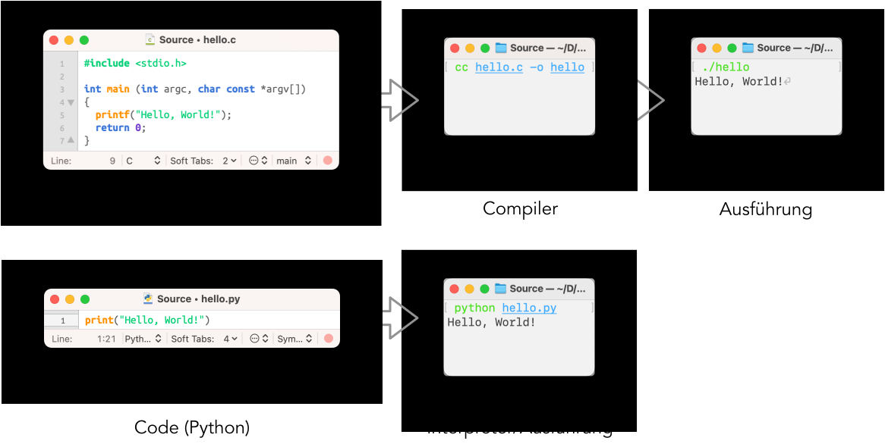

Python-Einführung
René Schwaiger
1 Grundlagen
Wie bei jedem Handwerk gibt es auch beim Programmieren gewisse Werkzeuge die man benötigt um eine Applikation zu erstellen. Das erste Werkzeug, dass ein angehender Programmierer verwendet ist wahrscheinlich ein Text-Editor. In diesem Programm schreibt man dann wie schon der Name andeutet Text, so-genannten Code, in einer bestimmten Programmiersprache. Je nach Programmiersprache beschreibt der Code entweder
- welche Schritte ein Computer ausführen soll (imperativ), oder
- das Problem selber (deklarativ).
Ein Programmiersprache ist wesentlich einfacher aufgebaut als eine menschliche Sprache. Das mag zu dem Gedanken verleiten, dass es einfacher ist einem Computer als einer Person beizubringen, wie ein bestimmtes Problem aussieht (deklarative Programmierung) oder wie es zu lösen ist (imperative Programmierung). Das ist aber ein Trugschluss. Im Endeffekt benötigt der Computer (durch die Einfachheit der Programmiersprache) eine wesentlich genauere Beschreibung als ein Mensch, führt diese aber dafür (im Normalfall) fehlerfrei und äußerst schnell durch.
Der „fertige“ Code wird entweder
- von einem Compiler in Maschinen-Befehle übersetzt (kompiliert) und dann vom Computer ausgeführt, oder
- direkt vom einem Interpreter ausgeführt (interpretiert).
Üblicherweise findet, zur Optimierung der Geschwindigkeit eines Programms, auch bei der Interpreter-Variant eine Übersetzung in maschinen-nahen Code statt. Als Programmierer muss man sich dabei aber – im Gegensatz zur Compiler-Variante – üblicherweise keine Gedanken machen.

1.1 Die Werkzeuge
1.1.1 Editor
Wie schon in einführenden Teil beschrieben ist ein Text-Editor oder auch kurz Editor eines der wesentlichen Werkzeuge eines Programmierers. Von einer Textverarbeitung (wie z.B. “Word”, “LibreOffice” oder “Google Docs”) unterscheidet sich ein Texteditor, dadurch, dass man damit wirklich nur Text schreiben kann. Eine Formatierung oder das Einfügen von Bildern ist nicht möglich.
Als essentielles Werkzeug ist ein Texteditor Teil der Standard-Installation vieler Betriebssystemen:
Theoretisch wäre es also möglich z.B. einfach Notepad zu verwenden und darin zukünftige Programmier-Projekte zu verwirklichen.
In der Praxis verwendet man aber üblicherweise einen speziell für die Programmierung angepassten Texteditor (manchmal auch Code-Editor genannt).
1.1.2 Command Line
Während man heutzutage als Anwender meist eine grafische Benutzeroberfläche (GUI: Graphical User Interface) verwendet, ist es als Programmierer üblich für viele Aufgaben in einer text-basierten Oberfläche (CLI: Command Line Interface) zu erledigen. Diese hat den Vorteil, dass man hier (wesentlich leichter als in einem GUI) Schritte, wiederum mittels Programmierung, automatisieren kann. Das heißt auch bei den Text den man bei einer textbasierten Oberfläche eingibt handelt es sich um Code in einer bestimmten Programmiersprache.
Um eine kleine Einführung in eine text-basierte Oberfläche zu geben schauen wir uns hier an wie man unter Windows Software mittels CLI installiert. Dazu installieren wir als erstes „Windows Terminal“ in der Powershell. Dabei handel es sich um einem Command-Line-Interpreter für die Programmiersprache PowerShell.
Das Programm PowerShell öffnen
- „Windows-Taste“ drücken
- „PowerShell“ eingeben
- Mit „Return“ (⏎) bestätigen
Den folgenden Text (Code) in das PowerShell-Fenster einfügen
und dann mittels ⏎ (Return) ausführen.
- Bei
wingethandelt es sich hierbei um ein Programm (Befehl) zum Suchen und Installieren von Software, die in diesem Zusammenhang auch als Paket bezeichnet wird. - Mit dem (Sub-)Befehl (Argument)
installteilt manwingetmit, dass es ein Paket installieren soll. - Der Name des Pakets wird mit der (Long-)Option (
--)idmit dem ArgumentMicrosoft.WindowsTerminalspezifiziert - Die (Short-)Option (
-)ewiederum gibt an, dass das das genau (exakt) das PaketMicrosoft.WindowsTerminalinstalliert werden soll
- Bei
Zeit zum auf die Schulter klopfen, nachdem du im 2. Schritt (wahrscheinlich) dein erstes PowerShell-„Programm“ geschrieben hast
Um zu sehen ob die Installation von „Windows Terminal“ funktioniert hat suchen wird nach dem Programm Windows Terminal (einem mehr oder weniger modernerer Ersatz des Programms PowerShell) und führen es aus.

Nun wollen wir in einem zweiten Schritt einen Code-Editor installieren. Ein beliebtest Programm ist dabei Visual Studio Code von Microsoft.
Da wir nicht genau wissen wie das Paket für Visual Studio heißt suchen wir mit dem Befehl Kommando/Argument
searchnach dem PaketDie Anführungszeichen (Single Quotes) sorgen dabei dafür, dass der Text als als Ganzes interpretiert wird und nicht als die 3 Argumente
Visual,StudioundCode.Die Ausgabe des obigen Befehls/Code sollte nun die gefunden Pakete/Software anzeigen
Name Id Version Source ------------------------------------------------------------------------------------------ Visual Studio Code XP9KHM4BK9FZ7Q Unknown msstore Visual Studio Code - Insiders XP8LFCZM790F6B Unknown msstore Microsoft Visual Studio Code Microsoft.VisualStudioCode 1.65.2 winget Microsoft Visual Studio Code Insiders Microsoft.VisualStudioCode.Insiders 1.66.0 wingetWir entscheiden uns für das Paket mit der Id
Microsoft.VisualStudioCodeund installieren dieses mit dem BefehlAm obigen Befehl sehen wir, dass die Reihenfolge von Option (
eundid) normalerweise keine Reihenfolge spielt. Weiters können wir feststellen, dass wir statt des Gleichheitszeichen zur Trennung der Optionidund des dazugehörigen Arguments (Microsoft.VisualStudioCode) auch einfach Leerzeichen verwendet werden können.
Bevor wir nun Visual Studio Code öffnen und unser erstes Python-Programm erstellen sollten wir noch den Python-Interpreter installieren.
Eine Suche mittels
zeigt und, dass die richtige Id des Programms wohl
Python.Python.3istWir installieren Python 3 mittels:
Der obige Befehl zeigt uns, dass man die Option
idauch weglassen kann undwingetin diesem Fall annimmt, dass es sich beim ArgumentPython.Python.3um den Namen des Pakets handelt.
Zum Schluss unser ersten Ausflug in die Programmiersprache PowerShell wollen wir noch das Programm „Hello, World!“ schreiben. Dabei handelt es sich um ein ein typische erstes Programm, dass den Text (String) „Hello, World!“ auf dem Bildschirm ausgibt. Im Wikipedia-Artikel zur Programmiersprache PowerShell sehen wir, dass der Befehl Write-Output verwendet werden kann um einen Text auf dem Bildschirm auszugeben. Eine typische Implementierung (Realisierung eines Problems in Code) von „Hello, World!“ in PowerShell-Code könnte also z.B. so aussehen:
Die doppelten Anführungszeichen erfüllen dabei den gleichen Zweck wie die einfachen Anführungszeichen beim Befehl winget search 'Visual Studio Code'. Der Text Hello, World! wird als einzelnes Argument interpretiert und nicht als die zwei Argumente Hello, und World!.
1.1.3 Interpreter
Nachdem wir „Hello, World!“ schon in PowerShell geschrieben haben, wollen wir das gleiche Programm nun in der Programmiersprache Python implementieren. Der Code dafür kann z.B. so aussehen
Wir sehen, dass der übliche Befehl (Funktion) zum Ausgeben eines Texts (String) in Python print heißt. Das Argument des Befehls "Hello, World!" wird hier, wie auch in der PowerShell, unter doppelte (oder einfache) Anführungszeichen gesetzt. Damit wird in Python angezeigt, dass es sich um einen Text (String/Zeichenkette) und nicht um einen Befehl (wie z.B. bei der Funktion print) handelt.
Wir haben num verschiedene Möglichkeiten unser Programm auszuprobieren. Eine der Möglichkeiten ist die Ausführung direkt im Python-Interpreter.
Python-Interpreter öffnen
- Möglichkeit 1: PowerShell öffnen, den Befehl
pythoneingeben und mittels ⏎ (Return) bestätigen - Möglichkeit 2: Mit „Windows-Taste“ die Suche öffnen, den Text “Python” eingeben um nach den Interpreter zu suchen und diesen öffnen
- Möglichkeit 1: PowerShell öffnen, den Befehl
Den Code von oben in den Interpreter kopieren und dann mittels ⏎ (Return) ausführen
Der Text „Hello, World!“ wird unter dem Code ausgegeben
>>> print("Hello, World!") Hello, World!
Bisher haben wir Code nur direkt im Interpreter ausgeführt ohne diesen vorher in einer Text-Datei zu speichern. Angesichts dessen, dass der bisherige Code nur eine Zeile lang war – dieser Code wird auch oft als “one liner” bezeichnet – war das auch nicht wirklich nötig.
Nun wollen wir den Code unseres „Hello, World!“-Programms mittels Visual Studio Code speichern und ausführen.
- Visual Studio Code öffnen
- Eine neue Datei erstellen: Ctrl + N
- Den Code
print("Hello, World!")einfügen - Die Datei mittels Ctrl + S unter dem Namen
hello.pyspeichern - Mittels „Run“ → „Run Without Debugging“ ausführen
1.1.4 IDE
Bei einem “Integrated Development Environment” handelt es sich um ein Programm, dass den Alltag eines Programmierers erleichtern soll. Dazu bündelt dieses üblicherweise Werkzeuge wie z.B.
- Code-Editor,
- Command-Line-Interface,
- Debugger (Programm um Fehler in Programmen zu finden und zu beheben), und
- Versionsverwaltung (zum Verwalten von Code-Änderungen)
in einer Oberfläche. Der Übergang von Texteditor mit Zusatz-Fähigkeiten wie z.B. das Ausführen des Codes in einem Schritt zu einer IDE ist dabei relativ fließend. Manche Leute würden z.B. Visual Studio Code auch schon als IDE bezeichnen.
Beliebte IDEs für die Entwicklung von Python-Code sind z.B.
1.2 Wiederholungsfragen
- Installiere das Programm “PowerToys” mittels
winget - Deinstalliere “PowerToys” mittels
winget uninstall - Finde raus wie du mittels
wingetSoftware auf deinem Computer auf den neuesten Stand bringen kannst - Nenne zumindest zwei Programmiersprachen
- Was unterscheidet einen Interpreter von einem Compiler?
- Schreibe ein Programm das den Text “Goodby Cruel World” ausgibt in
- PowerShell
- Python
2 Datentypen & Ausdrücke
2.1 REPL
Bisher haben wir den meisten Code direkt im Powershell- oder Python-Interpreter (python) geschrieben. Dabei geben wir eine oder mehrere Zeilen von Code direkt ein und führen diese – üblicherweise nach der Eingabe mittels Return ⏎ – aus. Diese Art der Eingabe-Oberfläche wird oft auch als sogenannte REPL (Read-Eval-Print Loop) bezeichnet.
Wie bei vielen anderen interpretierten Sprachen existieren auch bei Python alternative REPLs, die das Arbeiten mit Code nochmals vereinfachen können. Eine solche REPL mit dem Namen ptpython wollen wir nun installieren. Dazu verwenden wir pip, einen Package-Manager für Python. Ähnlich wie winget (und viele andere Package-Manager) kann man das Sub-Kommando install dazu verwenden Software zu installieren:
Nach der Installation können wir ptpython mittels Eingabe des Befehls
verwenden und uns mit der Bedienung davon ein wenig vertraut machen. Wie wir im Verlauf noch sehen werden bietet ptpython in Vergleich zur Standard-REPL (python) Funktionen wie Autovervollständigung und Syntax-Highlighting.
2.2 Ausdrücke
Bei einem Ausdruck (Expression) handelt es sich um ein (üblicherweise relativ kurzes) Stück Code, dass ausgewertet werden kann und dann ein bestimmtes Ergebnis eines bestimmten Datentyps liefert.
2.2.1 Konstanten
Einer der einfachsten Varianten von Ausdrücken sind Konstanten. Diese kennt man eventuell auch schon aus dem Mathematik-Unterricht. Hier mal ein paar Beispiele:
| Konstante/Ausdruck | Datentyp |
|---|---|
True |
bool (Boolscher Wert) |
1234 |
int (Ganzzahl) |
12.34 |
float (Gleitkommazahl) |
"1234" |
str (Zeichenkette) |
'1234' |
str (Zeichenkette) |
Um heraus zu finden welchen Typ ein bestimmter Ausdruck hat kann man die Funktion type verwenden:
<class 'bool'><class 'int'><class 'float'><class 'str'><class 'str'>2.2.2 Funktionen und Operatoren
Diverse Funtkionen wie z.B. abs, min und Operatoren wie z.B. +, - , ** (Potzenz) können ebenfalls Teil eines Ausdrucks sein.
3'12'812312.312.4-1Wie man bei der Funktion min sieht werden die Argumente einer Funktion in Python durch Beistriche getrennt.
❔ Warum unterscheidet sich das Ergebnis des ersten und des zweiten Ausdrucks?
❔ Welche Typen haben die obigen Ausdrücke?
Operationen wie + oder ** können ebenfalls als Funktion angesehen werden, die
- einen speziellen Namen (wie z.B.
+,-,*) besitzen und - meist Infix-Notation (Funktion/Operator zwischen Argumenten) statt Postfix-Notation (Argumente nach Operation/Funktion) verwenden.
So gibt es neben dem Operator + z.B. auch eine Funktion mit mehr oder weniger gleicher Funktionalität mit dem Namen add:
from operator import add # Funktion add importieren
add(1, 2) # Argumente nach Funktion (Postfix-Notation)
# 3
1 + 2 # Argumente vor und nach Funktion/Operator (Infix-Notation)
# 3Neben den von Haus aus sichtbaren Funktionen/Operatoren, wie z.B. abs und - gibt es noch viele andere Funktionen/Operatoren – und andere Zusatzfunktionalität – die erst importiert werden müssen bevor man sie verwenden kann. Ein Beispiel dafür sehen wir in der ersten Zeile des obigen Codeblocks in dem die Funktion add aus dem Modul operator importiert wird.
Ein weitere Neuerung im obrigen Text sind Kommentare. Diese beginnen in Python mit dem Zeichen #. Der Text hinter diesem Zeichen (bis zum Zeilenende) wird vom Interpreter ignoriert. Kommentare dienen z.B. dazu zu dokumentieren
warum ein bestimmte Löung für ein Problem gewählt wurde
welche Probleme auftreten könnten oder auch
wie ein bestimmtes Problem gelöst wurde.
Dabei sollte man darauf achten keine trivialen Kommentare zu schreiben. Ein Kommentar wie z.B.
ist höchstens für absolute Programmierneulinge interessant. Das soll natürlich keine Aufforderung keine Kommentare zu schreiben. Kommentare und andere Form der Dokumentation sind ein essentieller Teil guter Software.
2.2.2.1 Argumente (Input) und Rückgabewerte (Output)
Jede Funktion in Python übernimmt eine bestimmte Anzahl von Argumenten und returniert einen Rückgabewert. Dabei ist zu beachten, dass die Anzahl von Argumenten auch 0 sein kann. Eine Funktion kann auch None retunieren. Dieser Wert vom Typ NoneType steht im Endeffekt für „keinen Wert“. Schauen wir uns die Eingabewerte von Funktionen und Operatoren an Hand von ein paar Beispielen an.
3Die Operation + übernimmt hier zwei Argumente vom Typ int und gibt die Summe dieser Werte 3 (Typ int) zurück. Die Operation + ist auch auf andere Datentypen wie z.B. float und str definiert. Bei nachfolgendem Ausdruck:
5.5handelt es sich beim ersten Argumenten wiederum um eine Ganzzahl (int) und beim zweiten Argument um eine Gleitkommazahl (float). Beim Rückgabewert von 5.5 handelt es sich wiederum um eine Gleitkommazahl. Die Operation + ist auch auf Strings definiert, wobei hierbei die String aneinanderefügt werden:
'Hello, World'Beim Rückgabewert handelt es sich wiederum um einen String:
<class 'str'>Manche Funktionen können auch eine beliebige Anzahl von Argumenten übernehmen. Eine dieser Funktionen ist min:
-10-2Zum Schluss wollen wir uns noch die Funktion print ansehen, die wir schon verwendet haben um die Zeichenkette “Hello, World!” auf dem Bildschirm auszugeben. Diese kann wiederum eine beliebige Anzahl von Argumenten übernehmen und gibt diese auf dem “Standard Output” (stdout), also üblicherweise dem Bildschirm, aus. Die Funktion gibt dabei aber keinen Wert zurück (None).
Hello, WorldHello, World
<class 'NoneType'>Die Funktion print kann auch ohne Argumente aufgerufen werden. Das sorgt dafür, dass ein leere Zeile (ein Zeilenvorschub) auf stdout ausgegeben wird.
One
Two